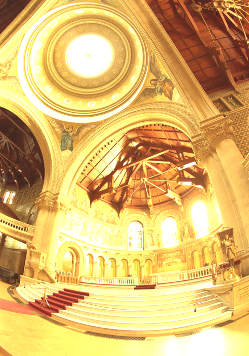
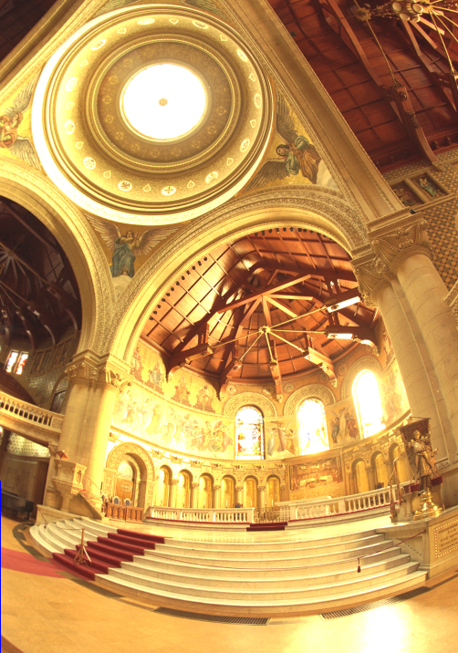
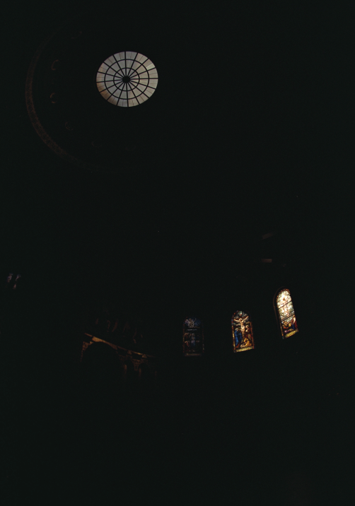
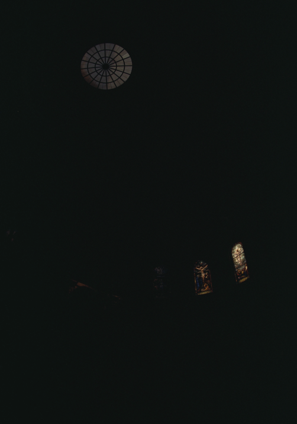

T = 1/4 seconds

T = 1/25 seconds

T = 3 seconds

T = 17 seconds

Red Channel

Green Channel

Blue Channel
This project attempts to create HDR photos by automatically combining multiple exposures into a single high dynamic range radiance map, and then converting this radiance map to an image suitable for display through tone mapping. Our approach follows the algorithm presented in the paper by Paul E. Debevec and Jitendra Malik, Recovering High Dynamic Range Radiance Maps from Photographs.
After carefully reading through the paper, we have started implementing the algorithm in Python. We have finished implementing the first part of the algorithm and we are able to obtain reconstructed radiance map from a series of images. However, though the radiance values across each channel makes sense, there seem to be a minor bug that causes them to be lower than expected. We show the preliminary results below where we visualize the radiance map across each channel for two sets of images.
Example Images:
T = 1/4 seconds |
T = 1/25 seconds |
T = 3 seconds |
T = 17 seconds |
Red Channel |
Green Channel |
Blue Channel |
|  T = 32 seconds |
 T = 16 second |
 T = 8 seconds |
 T = 4 seconds |
 T = 2 seconds |
 T = 1 second |
 T = 1/2 seconds |
 T = 1/4 seconds |
 T = 1/8 seconds |
 T = 1/16 second |
 T = 1/32 seconds |
 T = 1/64 seconds |
 T = 1/128 seconds |
 T = 1/256 second |
 T = 1/512 seconds |
 T = 1/1024 seconds |
 Red Channel |
 Green Channel |
 Blue Channel |
Due to our change of project topic after getting revisions from TA and change in group member, we have adjusted our schedule to the following plan:
So far we are in track with the planned progress as we finished Week 1 goals. We plan to finish the second half of the project by early next week, and then prepare for deliverables of the final presentation.